Uma pequena declaração
Conheci o Renan em 2017, e confesso que ele não fazia o meu tipo - até porque nem eu sabia direito qual era meu "tipo ideal".
Pra alguém que queria um amor de conto de fadas, era bem difícil imaginar que meu "príncipe" estava na mesma sala que eu. Nossa conexão foi esquisita, sabe? Éramos conhecidos, viramos colegas, depois amigos (só em sala de aula) e então... namorados. Tive coragem de levá-lo pra apresentar pra minha mãe - e pra mim, isso foi um passo gigante.
Você deve tá pensando: "Mas o que faz essa relação ser tão especial?"
Será a cumplicidade? O companheirismo? O amor? A paixão? A lealdade?
A resposta é: "NEM EU SEI!"
Talvez seja tudo isso junto ou nenhuma dessas coisas, veja:
- Eu sou do tipo que prefere guardar dores, tristezas e até felicidades só pra mim, mas com ele, passei a ver tudo com outros olhos
- O que faz nosso amor especial? É me sentir especial ao lado dele, e fazê-lo se sentir especial também, são tantos momentos bons que até os ruins ficam pequenos
- Pra mim, que vivia rodeada de tristeza, o Renan virou minha dose de felicidade, com ele, eu não só vejo alegria - eu sinto ela. Meloso? Demais! Pior que eu nem tô zoando.
Possivelmente, já entendeu o que ele significa pra mim. Mas se ainda não sacou, vou descrever: Ele é o amor que tenho em meu coração,
é o rosto mais belo aos meus olhos, é a voz mais gentil para aos meus ouvidos, é o conforto para minha cabeça, é a bondade, é a empatia,
é a compaixão.
Claro que nem tudo são flores - a gente briga, discorda, e é tão diferente! Mas o amor é isso aí: nos faz evoluir. E a gente tá nessa jornada juntos, resolvendo os problemas e se amando mais a cada dia.
Pra fechar:
Renan, se tá lendo isso (e eu sei que tá): Te amo mais que tudo. Espero estar sendo pelo menos 1% do que você é pra mim.
E saiba que se o mundo estivesse acabando, eu gostaria de estar ao seu lado e mesmo se eu não estivesse só a memória
do teu rosto, do teu sorrisso, do teu cheiro e do teu amor já me fariam morrer com um sorriso.
 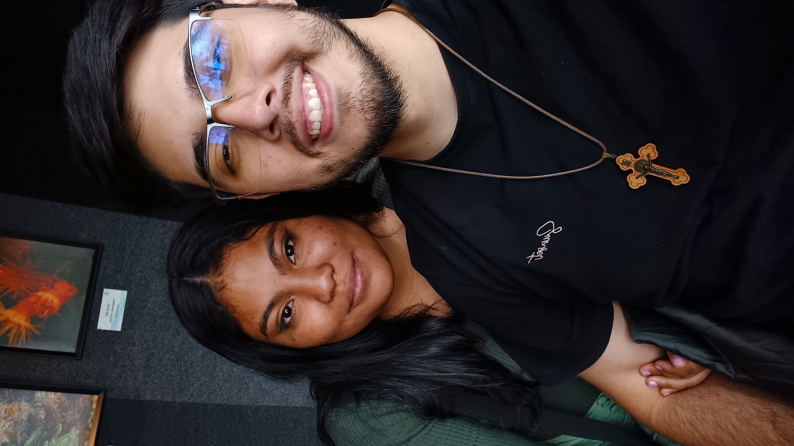
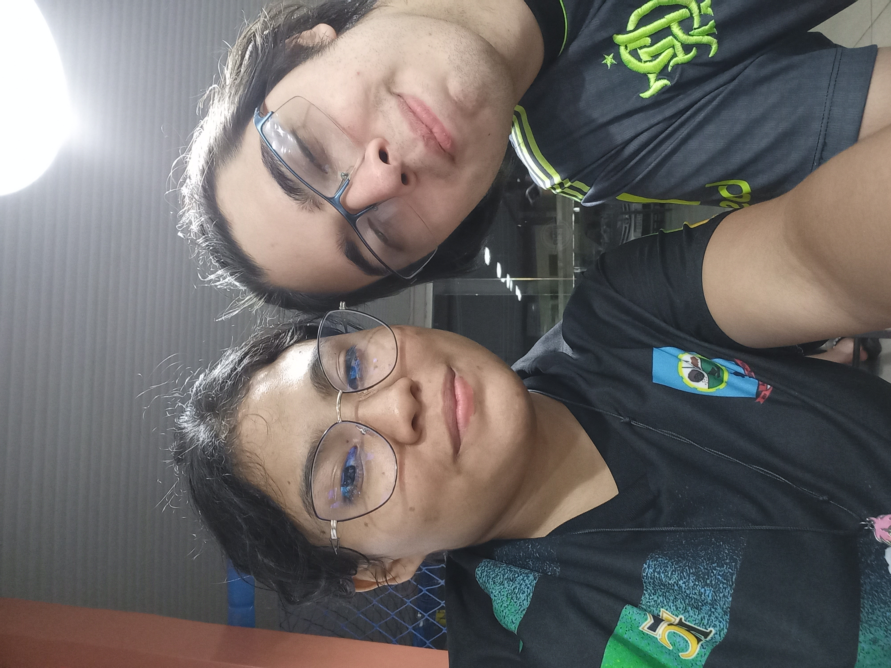
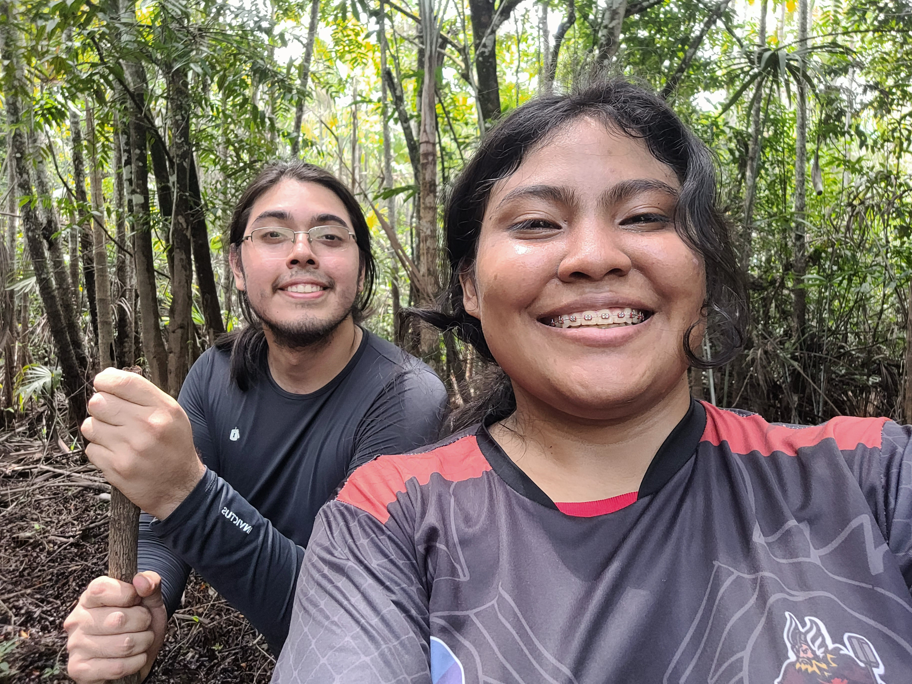
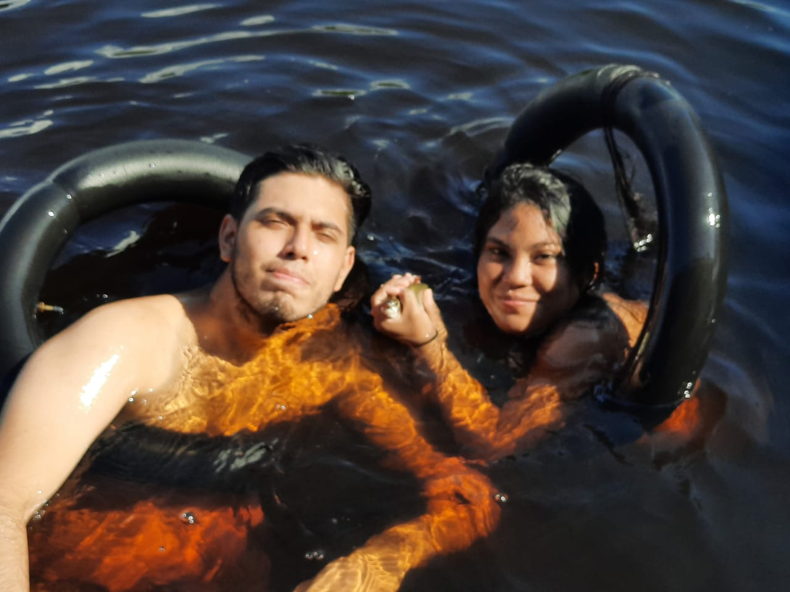
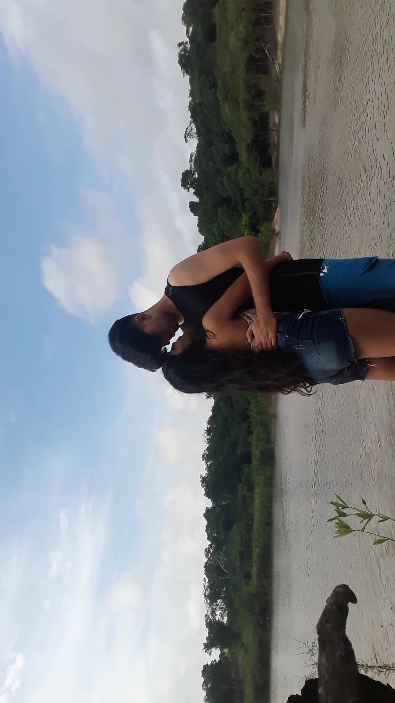
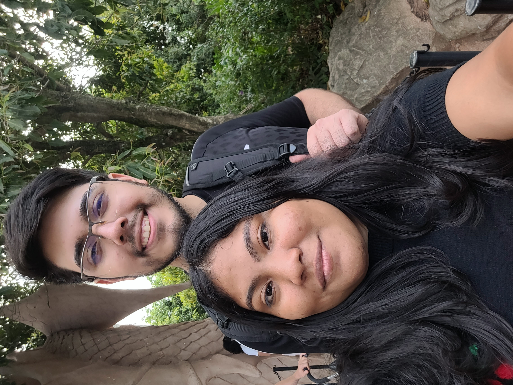
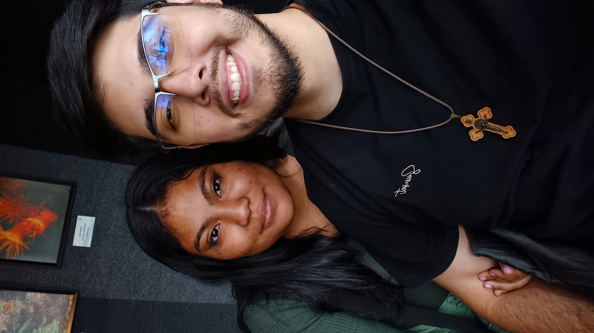
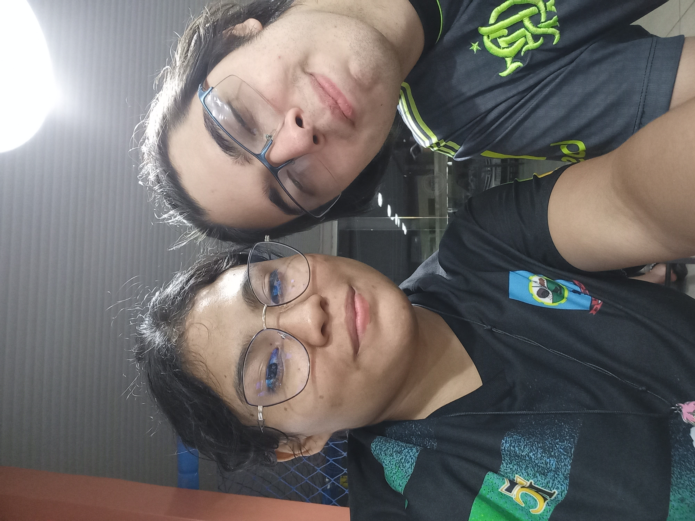
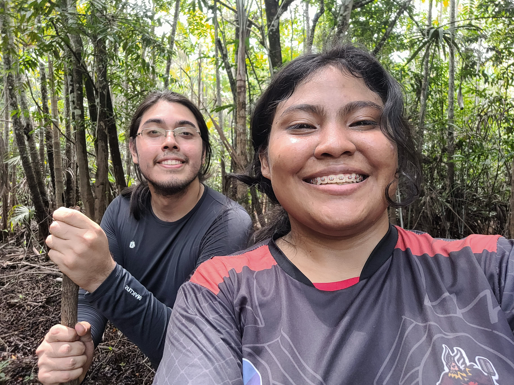
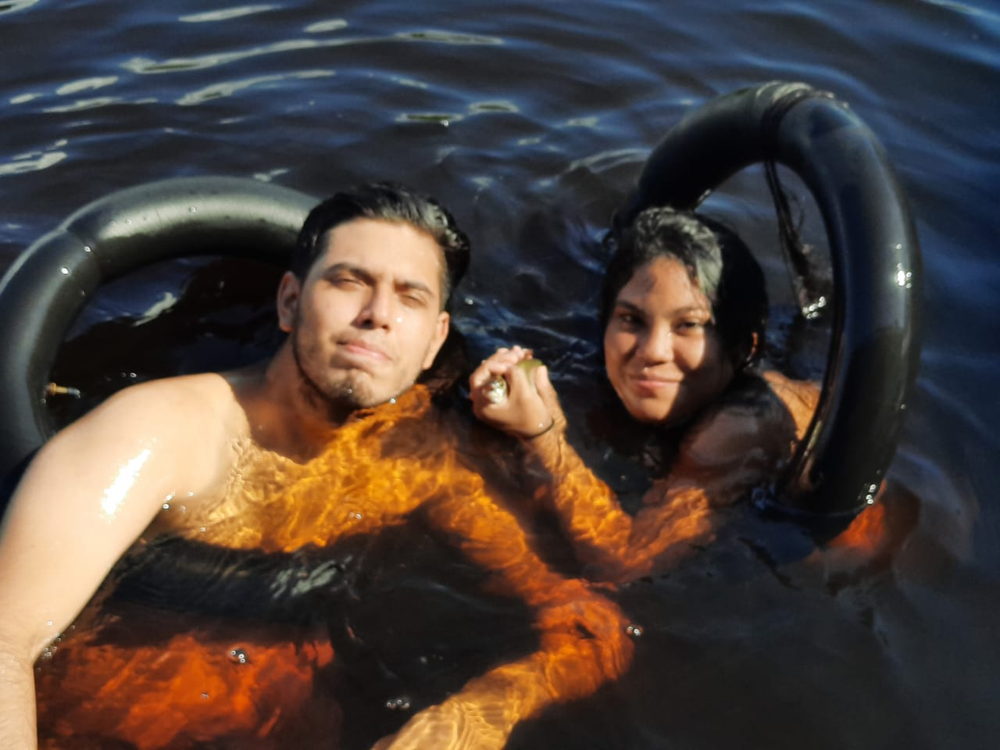
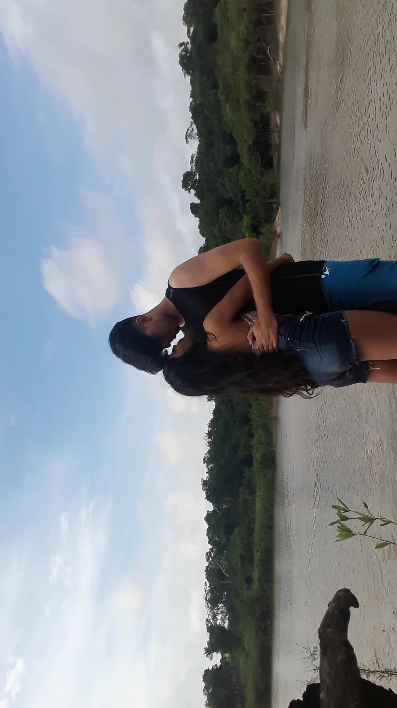
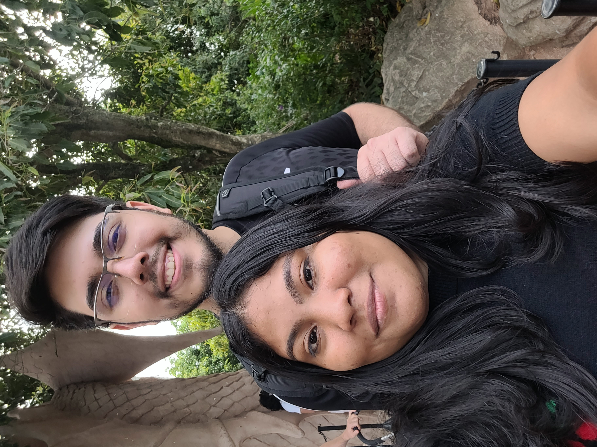